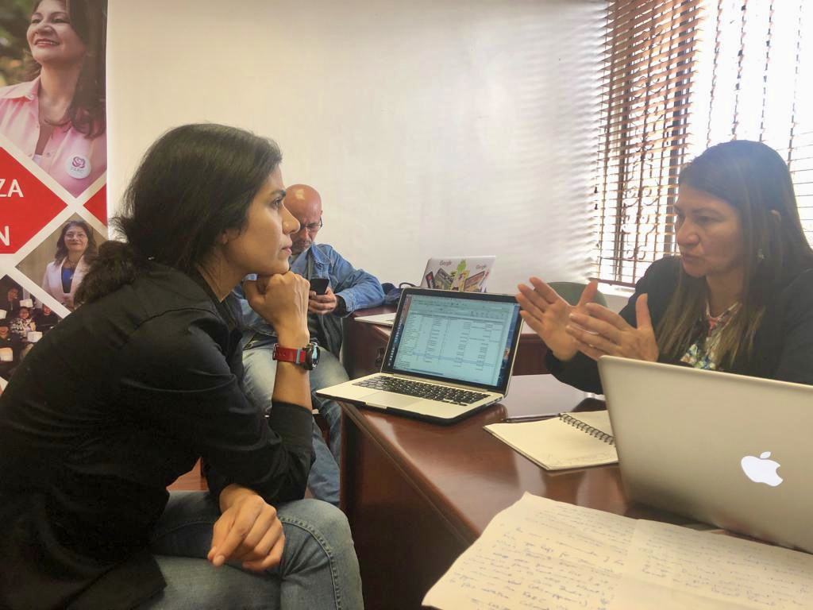
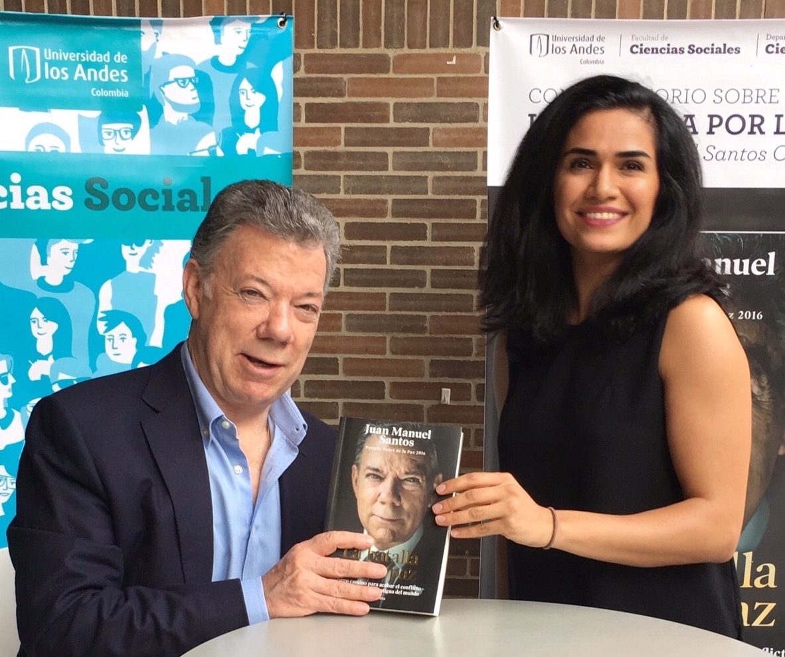
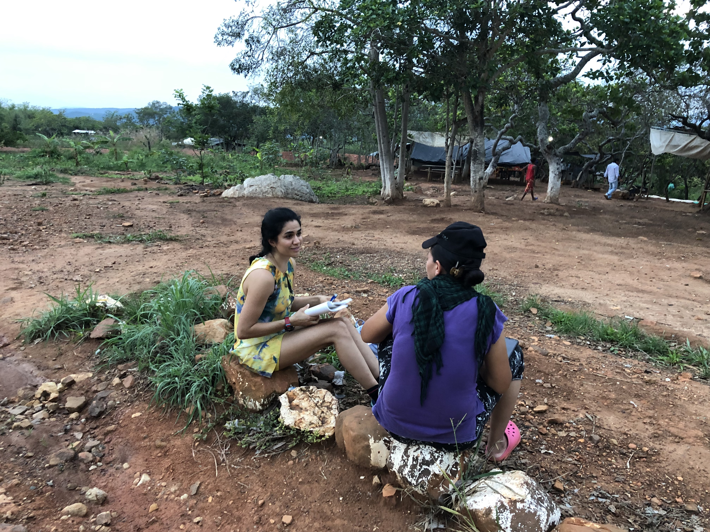
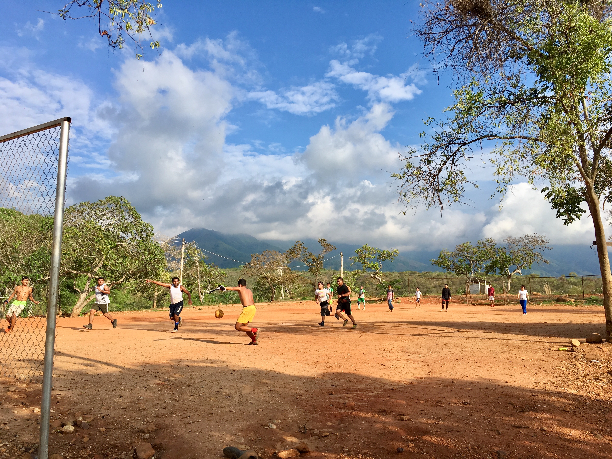
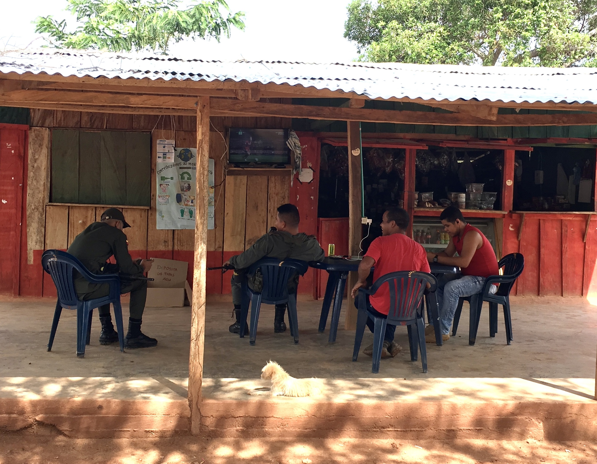
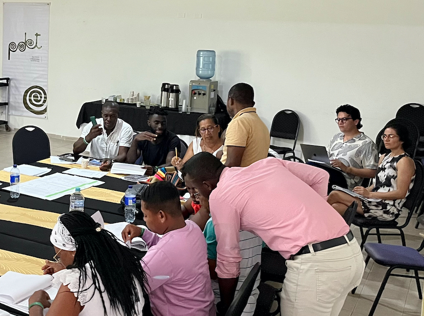
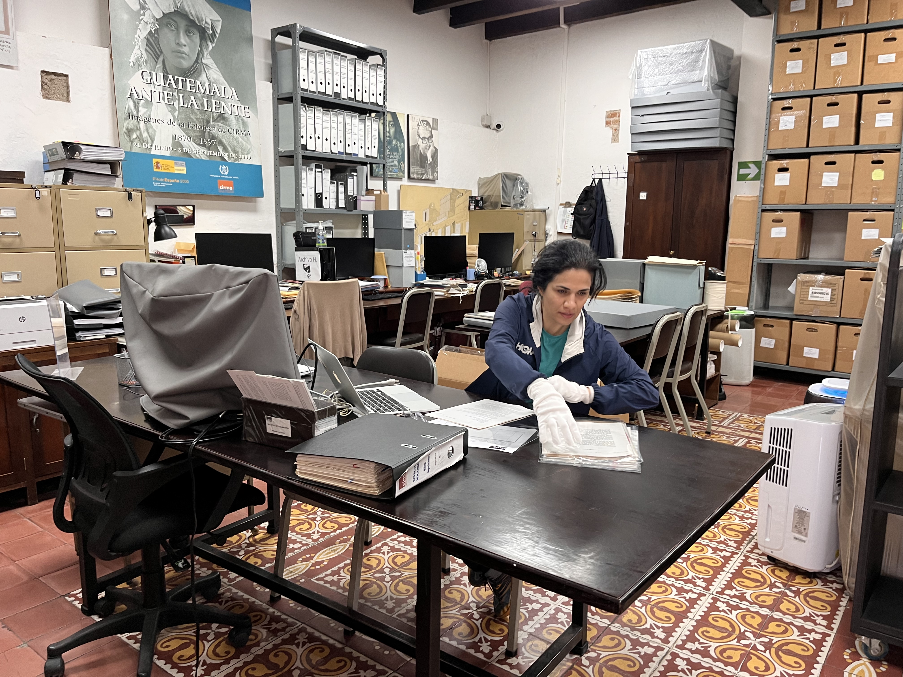
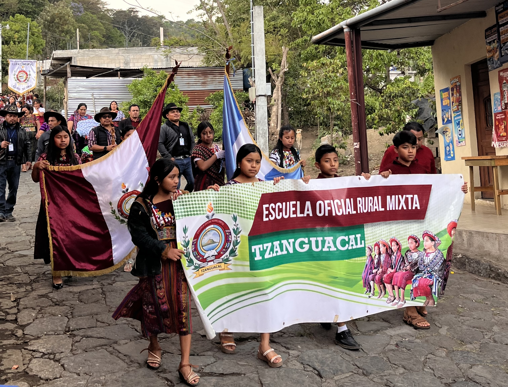

Fieldwork
My research is data-driven and grounded in fieldwork. I combine original datasets with interviews and participant observation in Latin America to understand how armed groups reorganize after war and why security outcomes vary across regions.


A core empirical insight runs through my work on post-conflict armed organization: structures, bonds, and norms created during war continue to shape networks of combatants after they disarm. These networks reconfigure through horizontal ties among local actors and vertical ties that connect leaders, political representatives, and ex-combatants in the field. Interviews with rebel leaders and political elites inform how I conceptualize these post-conflict networks and their consequences for postwar security.


In Colombia, I interviewed 130 former FARC combatants to reconstruct how demobilization and reintegration unfolded on the ground. I identify the sources of post-accord insecurity and trace the process through which rebel networks and state protection shape security outcomes. In a recent paper, I explain why some ex-combatants acquire high levels of trust in state security forces and report security threats to state agents. I show that this rebel-state cooperation reduced post-conflict homicides, especially assassinations of ex-combatants.


- When Reintegration of Ex-Combatants Turns Deadly: The State’s Role in Preventing Post-Conflict Homicides (https://doi.org/10.1080/03050629.2026.2625722)
- Can the Rebel Body Function without Its Visible Heads? The Role of Mid-Level Commanders in Peacebuilding (https://doi.org/10.1080/13533312.2022.2128337)
- How Wartime Bonds Affect Ex-Combatant Political Attitudes: A Natural Experiment with the FARC (https://doi.org/10.1080/09546553.2021.2017895)
- From Insurgent to Activist: Rebel Participation in Postwar Democratic Politics (under review)


I have also conducted fieldwork to explain empirical puzzles in peacebuilding: why does selective violence surge after war ends? How do local actors adopt national agendas when implementing peacebuilding? Why does civil war recur unevenly across national territory? In Catatumbo, the Pacific coast of Nariño, and Urabá, I held focus-group discussions with social and community leaders, including Indigenous and Afro-Colombian authorities in Indigenous territories. I also interviewed local government officials and United Nations representatives. In a recent paper, I show that when peacebuilding responsibilities are delegated to civilians, their visibility and leverage heighten their exposure to violence. The in-depth field research helps explain an empirical puzzle: why postwar countries experience a surge in selective violence against social and community leaders and human rights defenders.
- Delegative Peacebuilding: Explaining Post-Conflict Selective Violence (https://doi.org/10.1177/07388942251336643)
- Transitional Justice and Postwar Implementation of Development Programs (under review)


For a case study chapter of my book, I did archival research in the conflict archives of Guatemala. I triangulated the findings by engaging in participant observation in the country's Indigenous highlands. The analysis traces the incentives and actions of key actors during the peace process that started in the 1990s. The research explains the factors that reduced incentives for renewed insurgency and those that created the conditions for high levels of political violence in the postwar period.